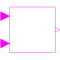

SI2BooleanSO2 Single Input / Boolean Single Output block |

|
Information
This information is part of the Modelica Standard Library maintained by the Modelica Association.
Block has two Boolean input signals u1 and u2 and one Boolean output signal y.
Connectors (3)
| u1 |
Type: BooleanInput Description: Connector 1 of Boolean input signals |
|
|---|---|---|
| u2 |
Type: BooleanInput Description: Connector 2 of Boolean input signals |
|
| y |
Type: BooleanOutput Description: Connector of Boolean output signals |